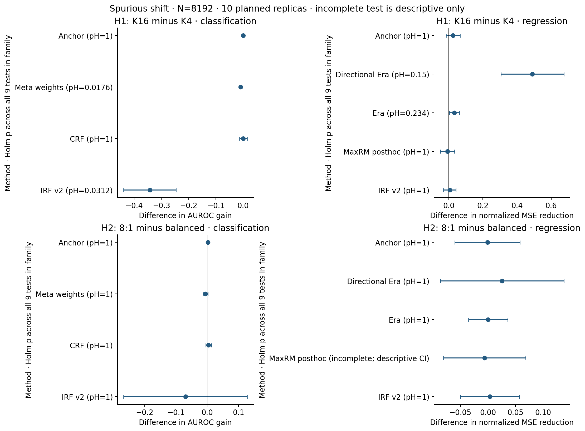
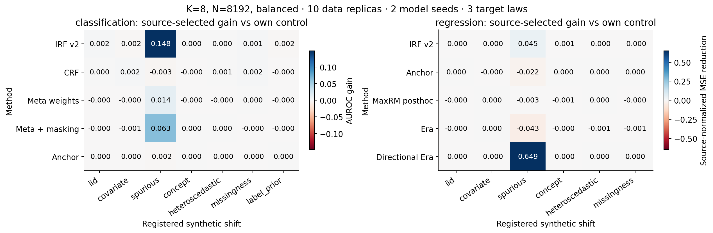
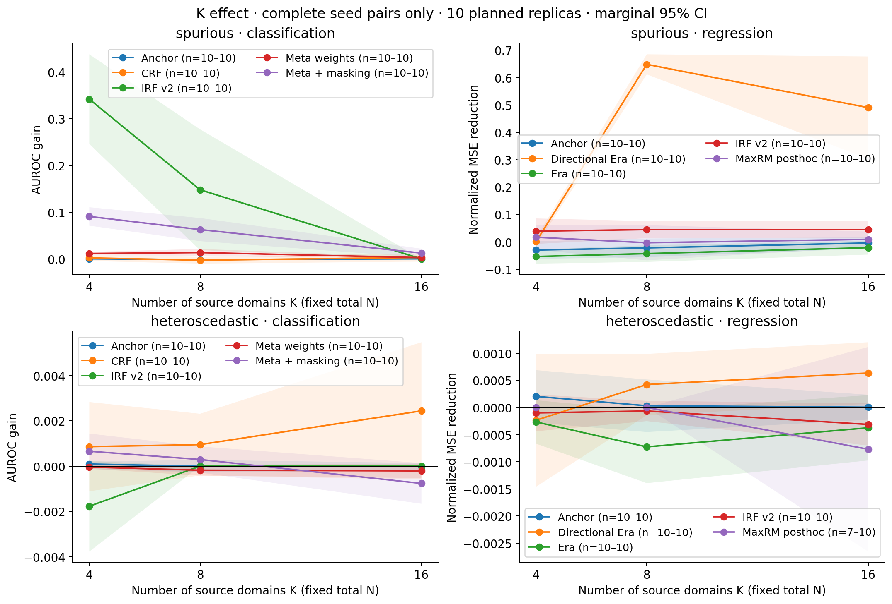
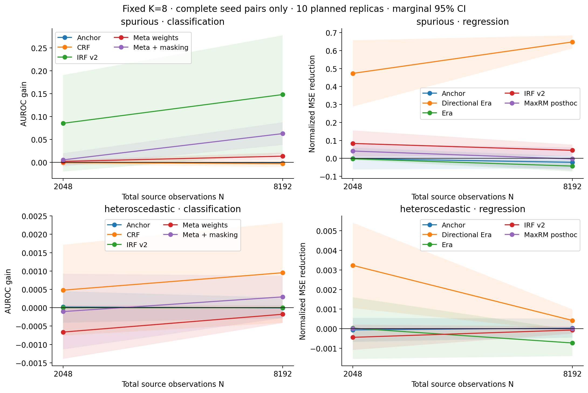
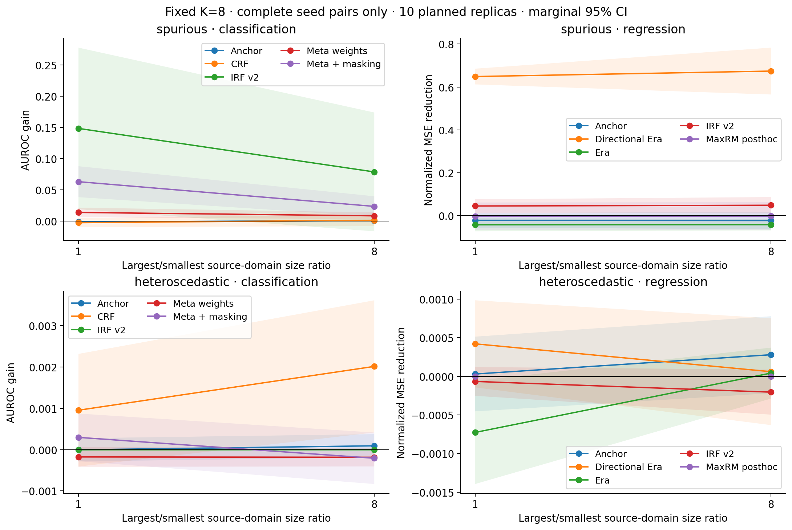
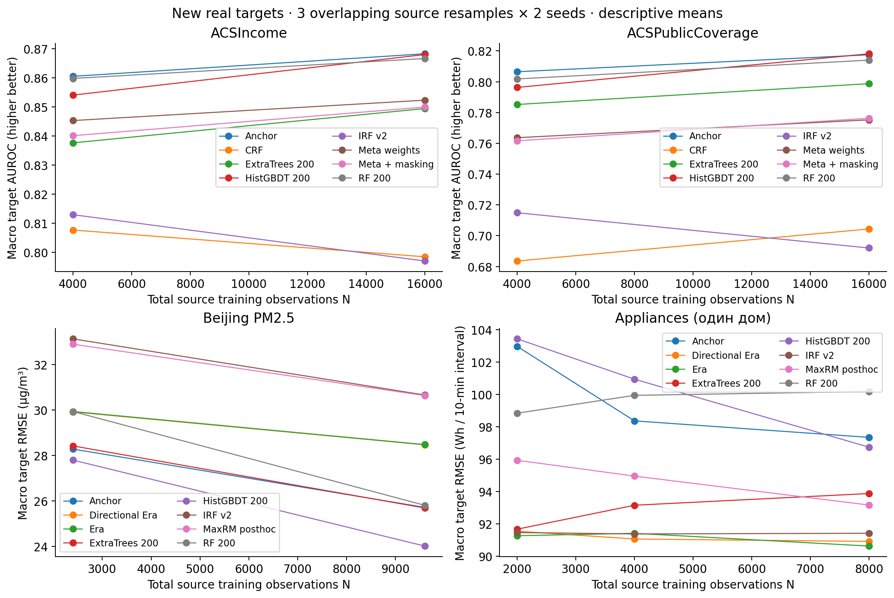
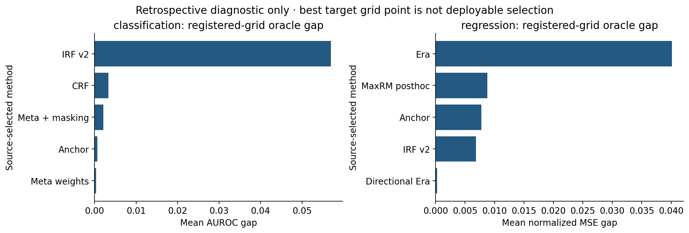
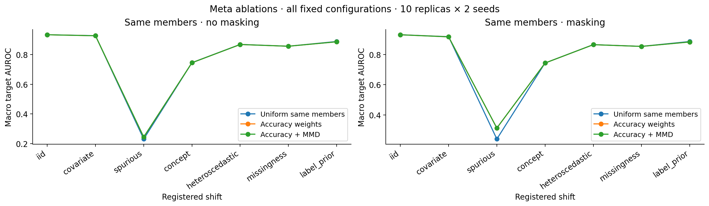
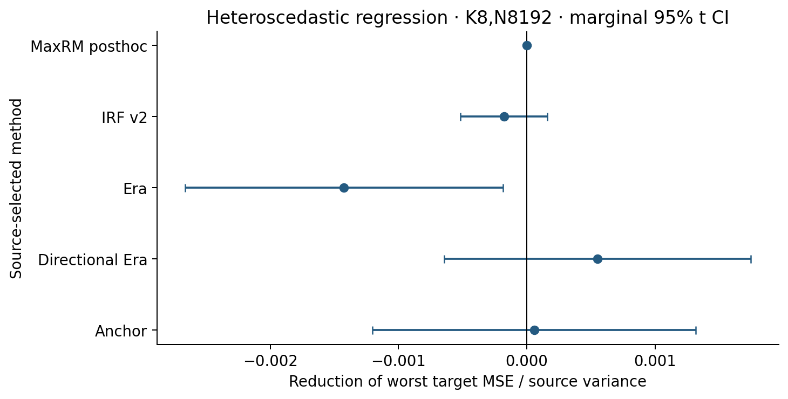
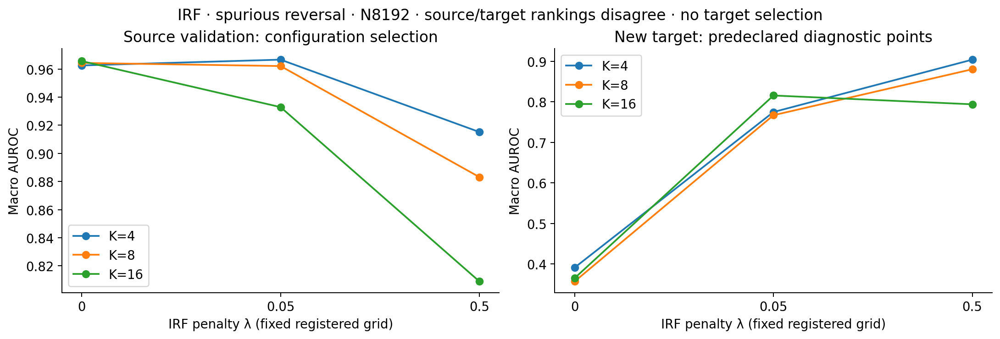

НИР · воспроизводимые эксперименты · expanded_v2Ансамбли деревьев при сдвиге распределения: полный разбор второй серии
Новые целевые домены, проверяемые гипотезы о числе и размерах source-сред, сопоставимые контроли и отдельный аудит численных результатов.
762 заданий: 757 полных + 5 с отказом MaxRM · 40,871 сохранённых source fits13,332 full-source конфигурации, 41,622 per-domain оценок. 17 из 18 основных тестов полны. Все отказы сохранены; отсутствующие результаты не подменены контрольной моделью.
Что подтверждено
Аудит имеет оговорки: 5 source-отказов MaxRM; редкие floating-point нарушения min leaf в промежуточном CV; np.nan/None cache-различие в 357 wd rows первого Beijing job. Исходные полные векторы этого задания воспроизведены после восстановления исходной null-семантики. Подробный разбор.
Аудит v2: passed_with_input_and_numeric_qualifications. Независимо пересчитаны 273,144 метрик, воспроизведены predictions 13,332 конфигураций. Максимальная разность метрик 2.66e-15, predictions 0. Проверены hashes, source selection, row IDs, matched pairs и журнал доступа.
В первой серии подтверждены 1008 метрик, 126 моделей и 42 source fits; выявлены ограничения пар MaxRM/Era/IRF/Meta. Аудит первой серии. Вторая серия использует исправленные пары и новые targets. Старые targets не стали новым независимым финалом.
Проверки выполнены отдельными уравнениями тем же авторским агентом; это не внешнее peer review. Логические запреты и хеши не являются OS-доказательством отсутствия любого ручного доступа. Meta — интерпретация, IRF v2/CRF/MaxRM — независимые реализации.
Основные тесты
Значимые H1-эффекты отрицательны: для IRF и Meta в classification преимущество относительно контроля снизилось при K16 против K4. H2 MaxRM regression неполон; остальные H2 не дали Holm-значимого результата. Область вывода — зарегистрированный spurious DGP и конкретные pipelines.
H1: gain(K16)−gain(K4), N8192,balanced,spurious. H2: gain(8:1)−gain(1:1), K8,N8192,spurious. Две отдельные семьи по девять exact sign tests. Holm внутри family; t-интервалы marginal 95%. Единица анализа — 10 независимых data replicas после усреднения seeds и target laws.
Все условия и методы
Средние по target-доменам, model seeds и source resamples/data replicas с равными весами на каждом уровне. AUROC выше — лучше; RMSE ниже — лучше. Gain: ΔAUROC или уменьшение MSE/source variance относительно собственного config-0 контроля. Для внешних RF/ExtraTrees/HistGBDT matched gain не определяется.
CI только по independent synthetic replicas; реальные source resamples пересекаются. CI не скорректированы одновременно. Полные сырые значения доступны в CSV.
Предзаданные H1/H2: разности выигрыша и скорректированные p

Источник: frozen expanded_v2; данные tables/. SVGМеханизмы сдвига: source-selected pipeline против своего контроля

Источник: frozen expanded_v2; данные tables/. SVGЧисло сред при постоянном N

Источник: frozen expanded_v2; данные tables/. SVGОбъём обучения при постоянном K

Источник: frozen expanded_v2; данные tables/. SVGДисбаланс размеров сред при постоянных K/N

Источник: frozen expanded_v2; данные tables/. SVGНовые реальные домены: увеличение source N

Источник: frozen expanded_v2; данные tables/. SVGДиагностика source selection — oracle не является deployable методом

Источник: frozen expanded_v2; данные tables/. SVGMeta: разные веса одних и тех же компонентов

Источник: frozen expanded_v2; данные tables/. SVGНеодинаковый шум: худший target

Источник: frozen expanded_v2; данные tables/. SVGIRF: source-only выбор и target diagnostic curve

Все точки зарегистрированы до target. Ретроспективная диагностика H5, не процедура настройки.
Полные файлы
Словарь полей, единиц и правил усреднения CSV
Исследовательский отчёт · PDF · Пререгистрация · Математическое приложение · Итоговая целостность · Frozen manifest
PDF источников находятся локально в literature/pdfs. На GitHub сохранены библиография, версии, hashes и журнал загрузок. Исходные models/predictions доступны локально в runs/expanded_v2; это не подмена агрегированными метриками.
Protocol SHA-256: 4b57843c27bb871d6b4ee494715024b99e37b6730420029943836ab7288be7a8